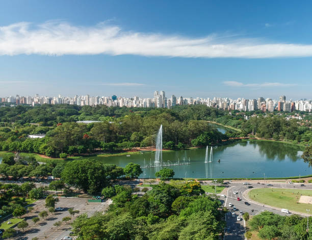
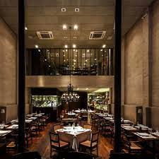
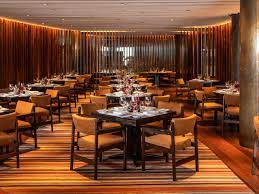

<!DOCTYPE html>
<html lang="pt-br"></html>>
    <head>
        <meta charset="UTF-8">
        <meta http-equiv="X-UA-Compatible" content="IE=edge">
        <meta name="viewport" content="width=device-width, initial-scale=1.0">
        <title>Projeto Traveller</title>
        <link rel="stylesheet" href="css/style.css">
    </head>
    
    <body>

    <div class="header">
        <div class="logo">
            <h2> Projeto Traveller</h2>
        </div>
        <div class="menu">
            <ul>
                <li><a href="./pages/hoteis.html" target="_blank">Hotéis</a></li>
                <li><a href="./pages/" target="_blank">Bares</a></li>
                <li><a href="./pages/restaurantes.html" target="_blank">Restaurantes</a></li>
                <li><a href="./pages/parques.html" target="_blank">Parques</a></li>
                <li><a href="" target="_blank">Contato</a></li>
            </ul>
        </div>
    </div>

    <div class="container">
        <h1 class="pagina_titulo">Conheça São Paulo</h1>
        <p class="descricao">São Paulo é a capital do estado de mesmo nome e a maior cidade do Brasil, com cerca de 12 milhões de habitantes. É um importante centro financeiro, cultural e gastronômico, que oferece diversas atrações para todos os gostos e bolsos. è uma cidade que oferece muitas opções de lazer, cultura e entretenimento para os turistas através de múseus, parques, obras arquitêtônicas e uma grande variedade de restaurantes.
        </p>

        <div class="box">
            <h2 class="titulo"> Parques </h2>
            <p class="descricao">São Paulo é uma cidade que conta com mais de 100 parques urbanos, que oferecem áreas verdes, lazer e contato com a natureza para os moradores e visitantes.
            </p>
            
            
            
            <p>
            <a href="./pages/parques.html" class="link" target="_blank">Veja os principais parques</a>
            </p>
        </div>

        <div class="box">
            <h2 class="titulo">Gastronomia</h2>
            <p class="descricao">São Paulo é uma cidade que oferece uma grande diversidade gastronômica, com restaurantes de diferentes cozinhas, estilos e preços. São aproximadamente 15 mil restaurantes, 20 mil bares  e 6 mil pizzarias, diversas opções  para saborear a culiária de alta qualidade oferecida pela cidade.
            </p>
            
            
            
            <p>
            <a href="./pages/restaurantes.html" class="link" target="_blank">Veja os principais restaurantes</a>
            </p>
        </div>

        <div class="box">
            <h2 class="titulo">Hospedagem</h2>
            <p class="descricao">São Paulo é uma cidade que oferece muitas opções de hotéis, desde hotéis com ótimo custo benefícios e localização privilegiada até hotéis luxuosos e exclusivos. 
            </p>
            
            
            
            <p>
            <a href="./pages/hoteis.html" class="link" target="_blank">Veja os principais hotéis</a>
            </p>
        </div>
    </div>
    </body>
</html>
